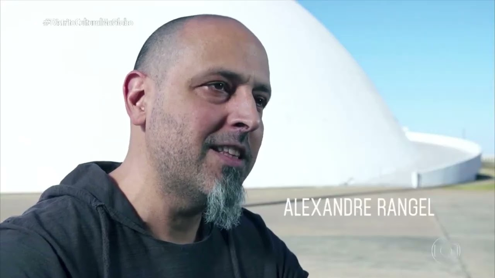
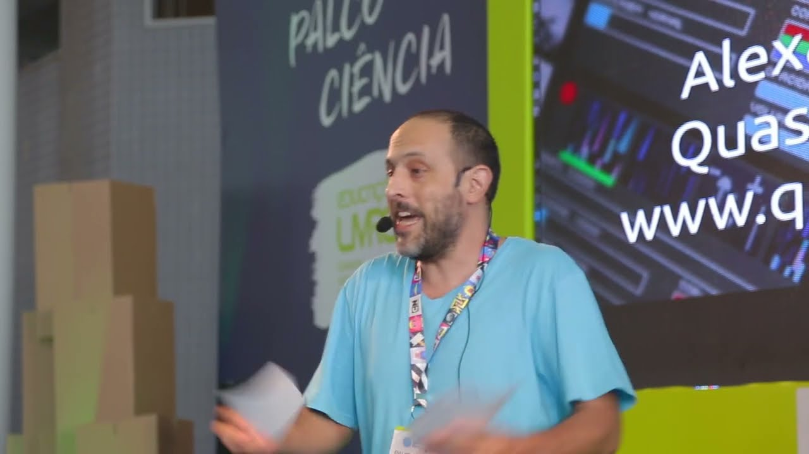
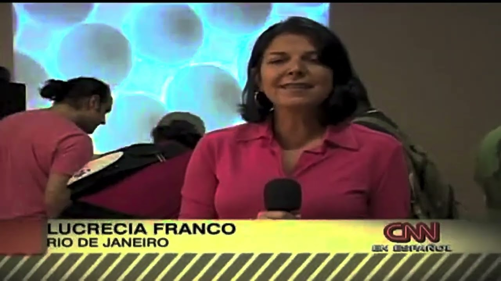

Alexandre Rangel
Alexandre Rangel : CV Completo (pdf) >>
Alexandre Rangel : Complete CV (pdf) >>
Alexandre Rangel é artista multimídia, pesquisador e desenvolvedor de software, radicado em Brasília. Doutor em Arte e Tecnologia pela Universidade de Brasília (UnB, 2019), trabalha desde os anos 1990 entre videoarte, música experimental e criação de software, e é o criador do software livre Quase-Cinema, plataforma de cinema ao vivo e arte-educação. O Quase-Cinema VJ, software livre de edição de vídeo ao vivo e projeção, nasceu como seu trabalho de conclusão do bacharelado em Artes Plásticas na UnB (2007). À frente do Quase-Cinema Lab, desenvolve uma prática que se afirma como subversão do espaço subjetivo da ecologia: em suas obras, plantas vivas são conectadas a sistemas de música, audiovisual e inteligência artificial e passam a controlar a geração de sons, imagens e palavras, deslocando o lugar de quem cria.
Seu processo é construído com software livre e de código aberto. Trabalha com Blender, compõe com Sonic Pi e Strudel, programa imagens ao vivo em Hydra e pratica live coding com linguagens exóticas, como ORCA, em integração com softwares de criação própria de performance audiovisual, enquanto explora a inteligência artificial, produz vídeos para projeção mapeada e desenvolve software para criação de vídeo ao vivo. Essas ferramentas atravessam sua pesquisa, sua produção e sua atuação como professor, como no projeto de pesquisa e ensino Code Muzik, realizado com apoio do FAC-DF e dedicado à prática e ao ensino de música por meio da programação.
Entre seus trabalhos de destaque estão Esculturas Quânticas, no Centro Cultural Fiesp, em São Paulo, a participação na exposição Década dos Oceanos, nos CCBBs do Rio de Janeiro e de São Paulo, e projeções no Museu Nacional da República, em Brasília. Suas obras, performances e oficinas já foram apresentadas no Brasil, Argentina, Áustria, Dinamarca, Holanda, Espanha, Taiwan e Estados Unidos.
Alexandre Rangel is a Brasília-based multimedia artist, researcher and software developer. He holds a PhD in Art and Technology from the University of Brasília (UnB, 2019). Since the 1990s he has worked across video art, experimental music and software, and he is the creator of Quase-Cinema, a free software platform for live cinema and art education. Quase-Cinema VJ, a free software for live video editing and projection, began as his final project for his BFA in Visual Arts (Artes Plásticas) at UnB (2007). Through his studio, Quase-Cinema Lab, he develops a practice that sets out to subvert the subjective space of ecology: living plants are wired into music, audiovisual and artificial intelligence systems, and it is the plants themselves that steer the generation of sound, image and text, unsettling the question of who, or what, is the author.
His process is built on free and open-source software. He works with Blender, composes in Sonic Pi and Strudel, codes live visuals in Hydra and performs live coding with exotic languages such as ORCA, integrated with audiovisual performance software of his own making, while also exploring artificial intelligence, producing video for projection mapping and developing software for live video creation. These tools run through his research, his artistic production and his teaching alike, as in Code Muzik, a research and teaching project supported by FAC-DF on making and teaching music through software programming.
Highlights of his work include Esculturas Quânticas (Quantum Sculptures) at Centro Cultural Fiesp in São Paulo, his participation in the exhibition Década dos Oceanos at CCBB Rio de Janeiro and São Paulo, and projections at the Museu Nacional da República in Brasília. His works, performances and workshops have been presented in Brazil, Argentina, Austria, Denmark, the Netherlands, Spain, Taiwan and the United States.
"O artista multimídia brasiliense Alexandre Rangel (VJ Xorume) é um criador elevado ao quadrado: desenvolveu ele próprio a principal ferramenta de sua atividade artística – um software engenhoso de manipulação de vídeo em tempo-real que está sendo utilizado por VJs do mundo inteiro. Alexandre deu ao programa o nome de 'Quase-Cinema', em homenagem ao artista plástico Hélio Oiticica, que usava a expressão para designar 'um campo de experiências transgressivas dentro do universo das mídias ou das imagens e sons produzidos tecnicamente."
"Brazilian multimedia artist Alexandre Rangel (VJ Xorume) is a creator squared: he himself developed the main tool of his artistic activity - an ingenious software for manipulating video in real-time that is being used by VJs worldwide. Alexandre gave the program the name "Quase-Cinema" (almost cinema), in homage to the artist Hélio Oiticica, who used the term to mean "a field of transgressive experiences within the realm of media or images and sounds produced technically".

'O futuro da arte'
Matéria Revista Galileu - Agosto 2021 por Roger MarzochiPDF Matéria completa >>
'The future of art'
Feature on Galileu Magazine - August 2021 by Roger MarzochiPDF Matéria completa >>

Programa Distrito Cultural : Tecnologia e Cultura
Entrevista Alexandre RangelRede Globo, 2019
Programa Distrito Cultural Tecnologia e Cultura
Entrevista Alexandre RangelRede Globo, 2019

Programação criativa com Alexandre Rangel
Palestra Campus PartyBrasília, 2017
Creative Coding: Alexandre Rangel
Campus Party lectureBrasília, 2017

Matéria Quase-Cinema VJ software
Rede CNN Internacional
Feature on Quase-Cinema VJ software
CNN Internacional Network
Nuestro propio cine: Un artista brasileño creó un programa gratuito que permite a los usuarios crear su propia sala virtual de cine. Informe de Lucrecia Franco, 2009.Our own cinema: A Brazilian artist created a free software that allows users to create their own virtual cinema productions. Interview by Lucrecia Franco, 2009.